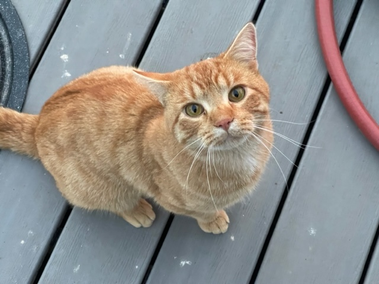
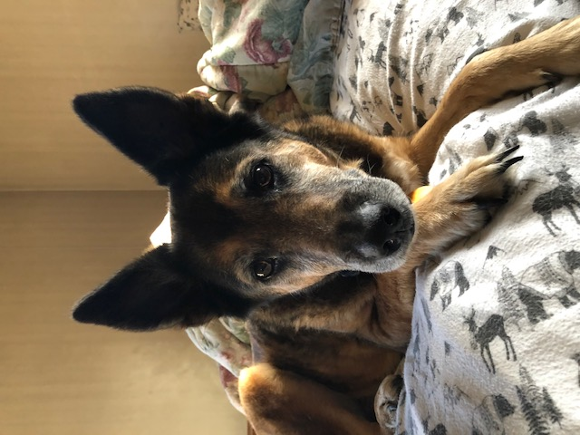
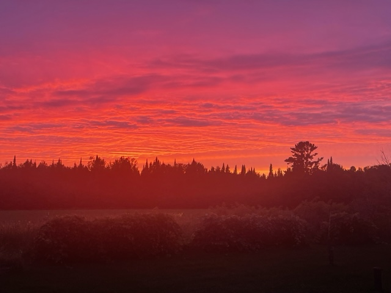

| Name: | Craig Frydrych |
|---|---|
| Education: | Bachelor's in Computer Science with an emphasis in Cybersecurity from University of Wisconsin - Green Bay |
| Occupation: | U.S. Air Force (Ret) / Full Time Student |
About Me:
I was raised on a diary farm in Armstrong Creek, WI, which is a 100 miles north of Green Bay. After 25 years of service, I retired from the U.S. Air Force and am currently a full time student at UW-Green Bay. During my military service, I had various assignments, deployments, and traveled to several countries. I have two daughters; Chiara is a Register Nurse (RN) at Bellin Hospital and Coryn "Stella", pictured with me above, is a senior in high school. Below, are photos of my cat, Guiseppe, and my dog, Rosie.
{kind=link}
 
| Fruits | Vegetables | Crops | Animals |
|---|---|---|---|
| Apples | Potatoes | Corn | Black Angus |
| Pears | Sweet Corn | Oats | Chickens |
| Raspberries | Onions | Clover | Cats |
| Blueberries | Cucumbers | Alfalfa | Dogs |
| Strawberries | Tomatoes |
Military Service:
- Assignments ↓
- Ramstein AB, Germany
- Holloman AFB, New Mexico
- Spangdahlem AB, Germany
- Scott AFB, Illinois
- Joint Base Charleston, South Carolina
- Osan AB, Republic of Korea
- Mountain Home AFB, Idaho
- Deployments ↓
- Shek Isa AB, Bahrain
- Kandahar AB, Afghanistan
- Accra, Ghanna
- Camp Arifjan, Kuwait
- Guantanamo Bay, Cuba
